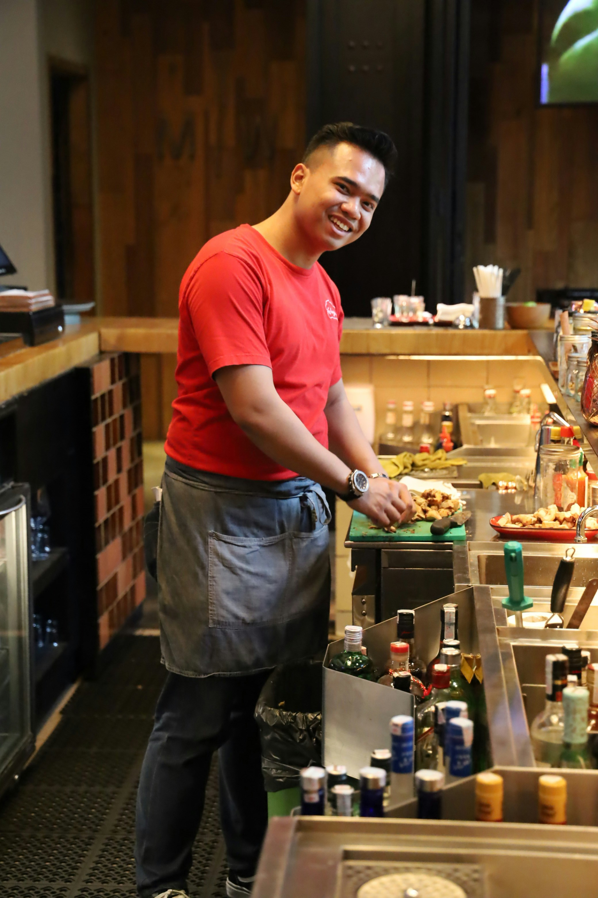

Founded by our team of chefs, farmers, and hospitality professionals with a shared vision, the restaurant began as a response to a growing desire for food that feels both deeply familiar and refreshingly inventive. From its earliest days, Pines of Nowhere has sought to bridge the gap between tradition and innovation—reimagining what it means to eat locally in a changing world. The name itself reflects the spirit of discovery: a place tucked away from the noise, where the food tells the story of the place it comes from. Over time, that story has grown richer. What started as a simple idea—honor the land and the people who tend it—has evolved into a daily practice rooted in curiosity and care. Our team works closely with regional growers, foragers, and artisans not only to source ingredients at their peak, but to understand the histories and landscapes behind them. Pines of Nowhere remains guided by the belief that food is both heritage and horizon—rooted in the past yet always reaching forward.

“Meals make the society, hold the fabric together in lots of ways that were charming and interesting and intoxicating to me. The perfect meal, or the best meals, occur in a context that frequently has very little to do with the food itself. I think food, culture, people and landscape are all absolutely inseparable.”
-Chef Andre Meek

Our team’s passion extends beyond the kitchen. Pines of Nowhere is committed to nurturing the community through partnerships with local producers and a warm, unpretentious dining experience that invites everyone to the table. Our goal is simple but profound: to nourish people—not just with food, but with connection, beauty, and a sense of our local community. At Pines of Nowhere, every plate is a conversation between the past and the present, the farmer and the guest, from the sea and land to your table.